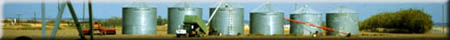
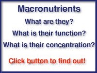
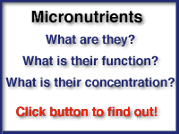
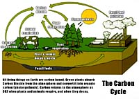
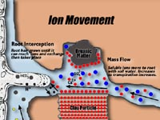
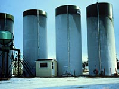
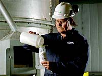
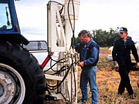
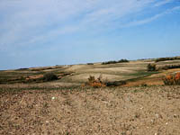

Macronutrients |
|

|
|
A plant needs at least seventeen elements to grow and reproduce. Hydrogen, oxygen and carbon are supplied
by the environment the other fourteen are supplied by the soil. Elements that are required by plants in relatively large amounts are called macronutrients; elements that are required in smaller amounts are called micronutrients. Each element has one or more specific functions in plant metabolism. The study of the ability of the soil to supply and sustain adequate amounts of nutrients for plant growth is called soil fertility. How plants take up nutrients and use them in their metabolism is called plant nutrition. Many soil physical and chemical characteristics affect the availability of nutrients to plants. The nutrient cycles determine the long term sustainability of fertility. But in the short term, the chemical form of the nutrient in the soil, how it moves to the plant root (ion movement) through the pore space of soils is most important. Nutrient deficiencies can usually be corrected with the addition of chemical or natural organic fertilizers. However, before we can know how much fertilizer to apply, nutrient deficiency can be quantified by chemical analysis of growing crops or soil testing after harvest, or better, just prior to seeding. Essential Nutrients These are nutrient elements that fulfill two conditions
|
|||
 These are nutrients that are required by plants in relatively large amounts and include the three supplied by the atmosphere carbon, hydrogen and oxygen and six supplied by the soil: nitrogen, phosphorus, potassium, calcium, magnesium, sulphur. Most cultivated Saskatchewan soils are deficient in nitrogen and phosphorus and require annual additions of these two fertilizers to remain productive. Potassium and sulphur deficiencies once concentrated in the poorer northern soils are spreading. Pulse and oil crops which are replacing cereals require more sulphur and potassium. Only a few soils require the alkaline elements of calcium and magnesium since most of our soils were formed on glacial till deposits that were rich in limestones. | |||
 These are elements plants require in relatively small amounts and include seven are recognized as being essential for all plants: chlorine,iron, boron, manganese, zinc, copper, molybdenum and nickel. Four others are essential for only some plants or are required by bacteria in symbiotic association with the plant: sodium, cobalt, vanadium and silicon. Although these nutrients are required in much smaller quantities than macronutrients by a factor of 10 to 1000 times less, nonetheless they are just as important and crop yield and quality will suffer if the plant is deficient in these nutrients.
| |||
 The long term fertility of soils depends on the cycling of nutrients particularly those macronutrients that are major components of soil organic matter: carbon, nitrogen, phosphorus and sulphur. The wonder of photosynthesis allows plants to capture carbon from the atmosphere and combine it with water and mineral nutrients that are absorbed through the plant roots. When plants die, or are converted to animal waste by consumption, soil microorganisms attack the residues in search of energy. The complex organic molecules are broken down, releasing mineral nutrients and carbon dioxide, completing the cycle. | |||
 How plants obtain nutrients from the soil is a complex phenomenon. Generally, there are thought to be three major mechanisms:root interception, mass flow and diffusion. For an individual nutrient element, its chemical form, concentration and soil physical and chemical parameters will determine the dominant movement mechanism. Understanding ion movement for a particular nutrient is essential if we are manage soil fertility through the addition of fertilizers. | |||
 Soils under intensive crop or animal production lose nutrients. Losses to the ground water through leaching and to the atmosphere through volatilization. We must also consider that the harvested crop or grazing animal takes away nutrients from the soil. Modern farming requires the regular addition of plant nutrients to supplement the nutrient supplying power of soils and maintain high yields. These nutrients are contained in natural (organic) or chemical fertilizers, which must be applied in a careful and timely manner. Fertilizers can be applied in many forms. Seen here is a storage facility for liquid fertilizers. | |||
 The fertilizer industry is essential to sustain modern intensive agricultural production. World consumption has increased 20 times since the 1950's. The developing nations of Asia are the major consumers of fertilizers accounting for almost 50 percent of the total world's consumption. Over 75 percent of the fertilizer used in Canada is in the three prairie provinces. | |||
 Modern farmers attempt to achieve balanced nutrition of crops through fertilization. This is very difficult to achieve since many nutrient deficiencies are not obvious by simply observing the crop looking for deficiency symptoms. Only at harvest will the farmer see a reduction in yield. A more scientific approach would be to analyze the growing plant and determine the concentration of nutrients (plant analysis), or test the soil prior to planting for its ability to supply nutrients (soil testing). Adding too much fertilizer has been a problem in many countries that have intensive agriculture production. Mobile nutrients such as nitrogen can move out of the soil profile into the underground aquifers and may contaminate our drinking water and rivers. The worker on the left is taking deep soil samples (several metres deep) to check for nitrogen leaching.
| |||
 Fertility and Saskatchewan Soils The natural fertility of Saskatchewan soils is high compared to many others throughout the world. The organic matter rich surface horizons has a reserve of nutrients such as nitrogen and sulfur and the parent material generally provides sufficient micronutrients. The natural fertility of these soils, however, has been declining drastically. Are we simply "mining" our soils to produce crops? What does the future hold?
|